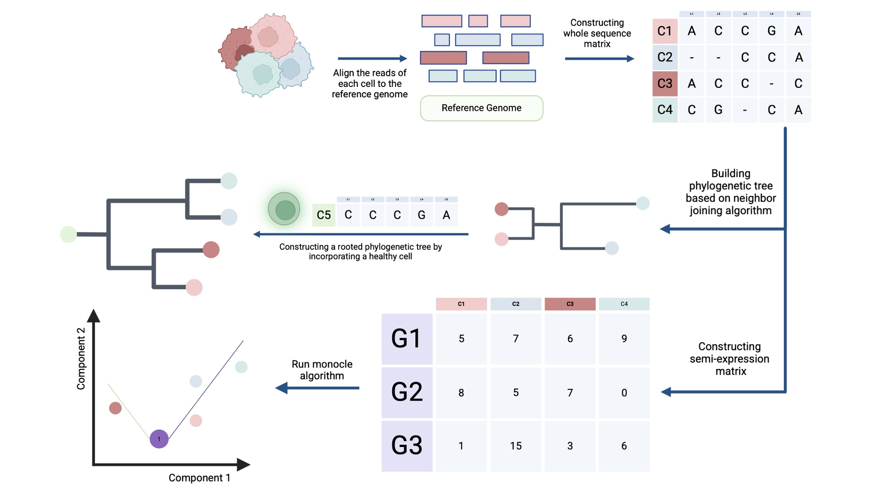
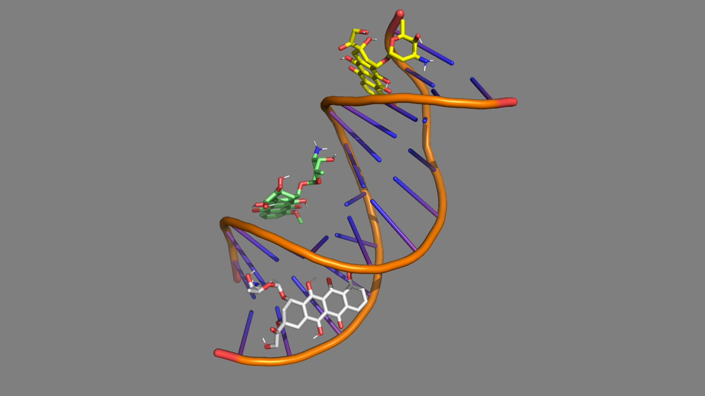

Computational biology and bioinformatics
Mapping cell-state transitions with computational biology
I build computational workflows to study how cells change identity, diverge into subpopulations, and acquire regulatory programs in disease progression.
- Cell-state transitions
- Single-cell omics
- Regulatory genomics

Current focus
Cell-state transitions in disease progression
Normal thyroid epithelial states to PTC and ATC transition.
Cells do not change identity all at once. They pass through intermediate states, accumulate regulatory changes, and diverge into distinct subpopulations. My work focuses on this transitional space, using single-cell transcriptomics, trajectory inference, gene regulatory network reconstruction, CNV-aware analysis, and multi-omics reasoning to turn complex biological data into mechanistically meaningful hypotheses.
About
Computational methods for biological state change
I am a computational biology and bioinformatics researcher with a background in Computer Science and Mathematics. My research focuses on cell-state transitions in complex biological systems, especially how cellular identities shift during disease progression.
I use trajectory inference, gene regulatory network reconstruction, CNV-aware interpretation, and multi-omics integration not as endpoints, but as tools to ask a deeper question: what regulatory logic drives a cell to abandon one state and commit to another?
My strongest current work is in cancer single-cell genomics. In a human thyroid cancer project, I lead computational analyses of single-cell transcriptomic data to study the transition from normal thyroid epithelial states to papillary thyroid carcinoma and anaplastic thyroid carcinoma.
I build reproducible workflows that connect high-dimensional data analysis with biological interpretation and experimentally testable hypotheses.
Beyond cancer, I am interested in computational biology problems involving single-cell and spatial omics, systems biology, regulatory genomics, biomedical machine learning, perturbation modeling, and high-dimensional biological data analysis.
Core question: what regulatory logic drives a cell to abandon one state and commit to another?
Current evidence: cancer single-cell genomics, especially thyroid cancer progression and glioblastoma.
Next step: PhD opportunities where rigorous computational methods can answer ambitious biological questions.
Research focus
Questions and methods that connect the portfolio
The portfolio is organized around dynamic biological systems, regulatory interpretation, and rigorous computational workflows.
Single-cell and spatial omics
Gene regulatory network inference
CNV-aware disease analysis
Cancer progression and tumor heterogeneity
Machine learning and statistics for biomedical data
Molecular modeling and drug-DNA interactions
Reproducible computational pipelines
Featured projects
Evidence across scales of computational biology
Cancer genomics is the strongest current application area, supported by broader work in molecular modeling and algorithmic biology.
Single-cell cancer genomics
Integrative Single-Cell Transcriptomics in Thyroid Cancer Dedifferentiation
Computational analysis of single-cell transcriptomic data to study the transition from normal thyroid epithelial states to papillary thyroid carcinoma and anaplastic thyroid carcinoma.
Manuscript in preparation; computational candidates under experimental validation.
Pipeline: scRNA-seq to QC and annotation to trajectory inference to dynamic gene expression to GRN inference to CNV-aware interpretation to candidate regulatory drivers.
Read project summary
Tumor evolution
Driver Gene Identification in Glioblastoma Using Pseudotime and Phylogenetic Analysis
Experience with tumor evolution, pseudotime analysis, mutation-informed reasoning, and integrative computational modeling.
M.Sc. thesis; poster and oral presentation.
Open poster
Molecular modeling
Molecular Dynamics Simulation of Doxorubicin Binding to DNA and Topoisomerase II
A mechanistic-scale project showing computational work beyond transcriptomics through docking, molecular dynamics, and trajectory analysis.
Ongoing collaboration.
RNA -> grammar -> structure
Algorithmic biology
RNA Secondary Structure Prediction
Algorithmic and computational foundations from Computer Science, using stochastic context-free grammars and evolutionary modeling.
Implementation project; GitHub repository available.
Skills
Computational toolkit
Tools and methods I use to move from raw biological data to interpretable hypotheses.
Single-cell and bioinformatics
Seurat, Monocle3, SoupX, Harmony, pySCENIC, CellOracle, TradeSeq, SCPA, InferCNV, CopyKAT, Galaxy, Cytoscape, BioRender.
Programming and reproducibility
Python, R, Bash, Git/GitHub, Docker, conda, renv, and pipeline development.
Machine learning and statistics
Machine learning pipelines, statistical testing, scikit-learn, and PyTorch.
Molecular modeling
GROMACS, Amber, AutoDock Vina, trajectory analysis, PyMOL, molecular docking, and molecular dynamics.
Timeline
Research and training path
A concise view of CV-supported milestones relevant to computational biology and PhD applications.
-
B.Sc. in Computer Science
Alzahra University, Tehran, Iran.
-
M.Sc. in Computer Science
Sharif University, Tehran, Iran.
-
Glioblastoma driver gene project
Single-cell gene expression, pseudotime, and phylogenetic analysis; M.Sc. thesis basis.
-
RNA secondary structure prediction
Implementation project based on stochastic context-free grammars.
-
Thyroid cancer single-cell genomics
Lead bioinformatics analyses for dedifferentiation from normal thyroid epithelial states to PTC and ATC.
-
Molecular dynamics collaboration
Doxorubicin binding to DNA and Topoisomerase II.
CV / Contact
Open to PhD opportunities in computational biology
I am looking for PhD opportunities where rigorous computational methods can help answer ambitious biological questions.